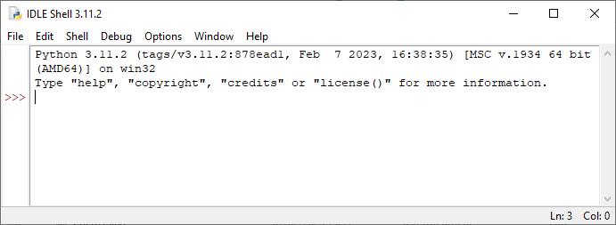
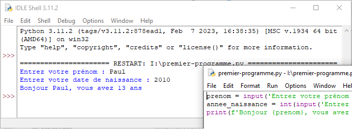
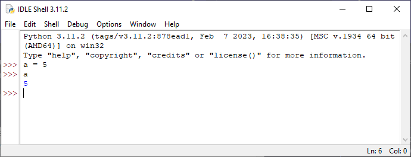

Instructions
Cours
Une instruction est une commande dont l'exécution fait quelque chose.
Une séquence est une suite d’instructions.
 Attention à ne pas confondre une instruction avec une expression dont l'évaluation donne une valeur.
Attention à ne pas confondre une instruction avec une expression dont l'évaluation donne une valeur.
Par exemple :
a = 2est une instruction qui affecte la valeur2à la variablea.print('Hello world')est une instruction qui affiche la chaine'Hello world'dans la console.a == 2n'est pas une instruction, c'est une expression qui compare la valeur deaà2, la valeur de cette expression estTrueouFalse.
type()
La fonction type() permet de connaitre le type d’une variable.1
PEP 8
Pas d’espace avant et à l’intérieur des parenthèses d’une fonction.
>>> x = 2
>>> type(x)
<class 'int'>
>>> y = 2.0
>>> type(y)
<class 'float'>
>>> z = '2'
>>> type(z)
<class 'str'>
Conversion de type
Les fonctions suivantes permettent de convertir une variable d’un type à un autre :
| fonction | description | exemple |
|---|---|---|
int() |
Convertit une chaine de caractères ou un flottant en entier. | >>> int(2.8)2>>> int('2')2 |
float() |
Convertit une chaine de caractères ou un entier en flottant. | >> float(5)5.0>>> float('5.5')5.5 |
str() |
Convertit un entier ou un flottant en une chaine de caractères. | >>> str(5.5)'5.5' |
Observons dans la console comment une variable de type float qui a une valeur entière est affiché avec un point :
Instructions d’entrée et sortie
Cours
Une instruction d’entrée permet à un programme de lire une valeur saisie au clavier par l’utilisateur. Une instruction de sortie affiche un message sur l’écran de l'utilisateur.
En Python, la fonction input() permet d’écrire une instruction d’entrée qui affecte la valeur saisie par l’utilisateur à une variable.
input() est toujours du type str :
Ici la valeur affectée à nombre_entier est une chaine de caractères : '25'. Pour obtenir un nombre, de type int ou float, afin de faire des calculs par la suite par exemple, il faut la convertir :
Si l’utilisateur ne saisit pas un nombre entier, cette instruction génère un message d’erreur.
Une instruction de sortie s’écrit en utilisant print() pour afficher à l’écran des chaines de caractère et/ou des variables, séparés par des virgules.
PEP 8
Un espace après une virgule (,), mais pas avant.
>>> print('Hello')
Hello
>>> message='world'
>>> print('Hello', message)
Hello world
>>> nombre = 5
>>> print(nombre)
5
>>> print('le nombre est', nombre)
le nombre est 5
>>> a = 5
>>> b = 6
>>> print('la somme de', a, 'et de', b, 'est', a + b)
la somme de 5 et de 6 est 11
Par défaut, print() provoque un retour à la ligne après chaque affichage. Pour changer ce comportement il faut préciser la fin de l’affichage en ajoutant un paramètre end= suivi d'une chaine de caractères, par exemple un espace end=' ' ou même une chaine vide end=''.
Python 3.6 a introduit les chaine de caractères f-strings (formatted string) qui s’écrivent avec f devant et permettent d’y insérer des variables, ou même des expressions, entre accolades.
>>> prenom = 'Paul'
>>> annee_naissance = 2010
>>> print(f'Bonjour {prenom}, vous avez {2023 - annee_naissance} ans')
Votre nom est un Paul et vous avez 13 ans
Premier programme
Pour permettre à l'utilisateur d'entrer son prénom et sa date de naissance et d'affecter ses réponses aux variables prenom et annee_naissance, il faut à chaque fois écrire dans la console les instructions suivantes :
>>> prenom = input('Entrez votre prénom : ')
Entrez votre prénom : Paul
>>> annee_naissance = int(input('Entrez votre date de naissance : '))
Entrez votre date de naissance : 2010
>>> print(f'Bonjour {prenom}, vous avez {2023 - annee_naissance} ans')
Bonjour Paul, vous avez 13 ans
>>>
Ouvrons IDLE (/python/Lib/idlelib/idle.bat) pour écrire un premier programme, l'interpréteur de commande avec l'invite Python >>> apparaît :
Python propose par défaut un IDE (pour Integrated Development Environment) appelé IDLE. Il existe de nombreux IDE, certains dédiés à Python comme PyScripter, Thonny, etc. et d'autres généralistes comme VS Codium, VS Code, etc. acceptant plusieurs langages informatiques.

Ouvrons un nouveau fichier avec le menu File/New pour entrer le programme Python suivant :
prenom = input('Entrez votre prénom : ')
annee_naissance = int(input('Entrez votre date de naissance : '))
print(f'Bonjour {prenom}, vous avez {2023 - annee_naissance} ans')

Enregistrons le programme dans nos fichiers avec le menu File/Save As puis Run/Run Module pour exécuter le programme. Le résultat est affiché dans la console :

Nous avons écrit notre premier programme informatique !
Notons au passage une différence importante entre l'affichage d'une variable depuis la console et depuis un programme :
Il suffit de saisir le nom de la variable à l'invite de commande pour afficher sa valeur :
Exercice corrigé
Pour passer d’un pixel couleur codé RGB (mélange des trois couleurs rouge, vert, bleu) à un pixel en nuance de gris, on utilise la formule suivante qui donne le niveau de gris : \(G = 0,11 \times R + 0,83 \times V + 0,06 \times B\) où \(R\), \(V\) et \(B\) sont les niveaux de rouge, vert et bleu.
Ecrire le programme qui demande en entrée les 3 couleurs d’un pixel et affiche en sortie la nuance de gris.
Réponse
Quelques questions à se poser avant d'écrire le programme demandé :
- Quelles sont les informations à saisir par l'utilisateur ? Les trois niveaux de couleurs \(R\), \(V\) et \(B\).
- Où stocker ces informations ? Dans trois variables de type
intnommées par exempleR,VetBcomme dans la formule. - Que doit calculer le programme ? Le niveau de gris calculé en utilisant la formule et stocké dans une variable, nommée par exemple
G, de typeint. - Que doit faire ensuite le programme ? Le programme doit afficher le niveau de gris.
Traduit en Python, le programme s'écrit simplement :
Noter la présence de commentaires dans le code, commençant par le signe #, ils sont ignorés par l'interpréteur Python.
Essayer le programme sans faire la conversion des variables R, V et B en int et constater l’erreur produite.
-
Nous n’abordons pas la notion de classe ici. ↩